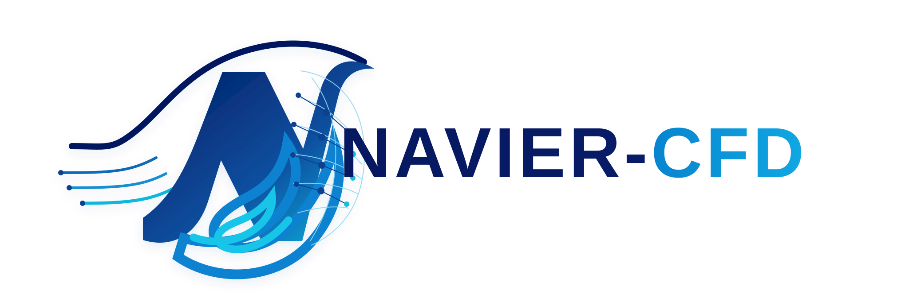
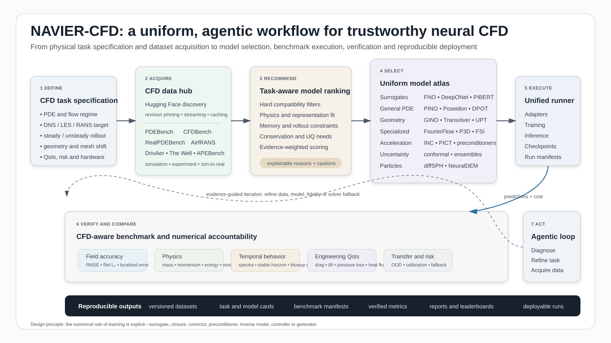

Operator learning
DeepONet, FNO/PINO, Geo-FNO, GINO, U-NO, GNOT, Transolver, spectral and transformer operators.
NAVIER-CFD connects 52 executable native reference models, 11 dataset profiles, official provider adapters, unified training and checkpoints, physical metric suites, and evidence-aware recommendation for CFD and chemical-engineering surrogate modelling.

The loader resolves dimension, channels, coordinates, representation, spectral modes, graph or attention settings, and forward dispatch. A real sample overrides static defaults.
the_well.data.WellDataset with hf://datasets/polymathic-ai/ and an individual well_dataset_name. It is not treated as one monolithic Hugging Face dataset repository.
from navier_cfd import load_cfd_dataset, load_model
well = load_cfd_dataset(
"the_well",
configuration="active_matter",
split="train",
streaming=True,
n_steps_input=4,
n_steps_output=1,
)
sample = well[0]
fno, plan = load_model(
"fno",
dataset="the_well",
sample=sample,
return_plan=True,
)Every native reference model is executable, trainable, shape-tested, backward-tested, and connected to the same dataset, trainer, checkpoint, and evaluation layers.
DeepONet, FNO/PINO, Geo-FNO, GINO, U-NO, GNOT, Transolver, spectral and transformer operators.
PINN, NSFnets, PINNsFormer, PINO, PIBERT, PI-MFM, RiemannONet, DeepM&Mnet and related variants.
MeshGraphNets, GINO, DoMINO, UPT, DPOT, Poseidon, PROSE-FD, PDEformer, P3D and AeroTransformer.
PDE-Refiner, FourierFlow, solver correctors, preconditioners, conformal prediction, adaptation and flow matching.
Named suites combine standard field metrics with ideas adopted from The Well and RealPDEBench. Each result records its equation, direction, ideal value, requirements, assumptions and evaluation space.
MSE, RMSE, MAE, L∞, relative L1/L2, NMSE, NRMSE, R², Pearson correlation and cosine similarity.
Variance-scaled errors and Parseval-consistent low-, middle- and high-frequency spectral MSE.
fRMSE, temporal frequency error, turbulent kinetic-energy error, mean velocity-profile error and Update Ratio.
Divergence, vorticity, kinetic-energy and spectral errors with explicit velocity, grid and axis metadata.
from navier_cfd import MetricContext, MetricSuite
context = MetricContext(
time_axis=1,
spatial_axes=(2, 3),
velocity_channels=(0, 1),
spacing=(dx, dy),
profile_axis=2,
)
suite = MetricSuite.combine([
"data_standard",
"the_well",
"fluid_standard",
])
results = suite.evaluate(prediction, target, context=context)
Use the evidence-aware recommender, then train and evaluate the selected model with the target dataset and physics-aware metric suite.